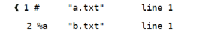
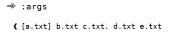
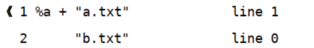
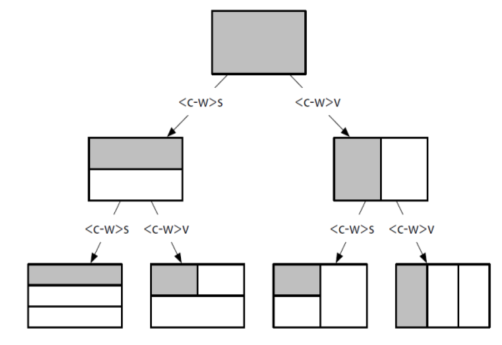

Vim管理多个文件
File
Tip 36 Track Open File with the Buffer List
用缓冲区列表管理打开的文件
文件与缓冲区的区别：文件是存储在磁盘上的，而缓冲区则存在于内存中。当 Vim 打开一个文件时，该文件的内容被读入一个具有相同名字的缓冲区。刚开始，缓冲区的内容和文件的内容完全相同，但当我们对缓冲区做出修改时，二者的内容就会出现差别。如果我们决定保留这些修改，就可以再把缓冲区的内容写回到文件里。
Vim允许我们同时在多个缓冲区（buffer）上工作，它会显示一个窗口，但窗口内仅会显示第一个buffer，一个窗口对应一个buffer。另外的buffer在当前窗口不可见，但其内容已经被载入到一个后台的缓冲区了，通过:ls命令可以查看。
:ls命令会列出所有被载入到内存中的缓冲区的列表，例如：

% 符号指明哪个缓冲区在当前窗口中可见， 而#符号则代表轮换文件。 按 <C-^>可以在当前文件和轮换文件间快速切换。
使用缓冲区列表 ( :buffer 命令简写形式为 :b )
可以用 4 条命令来遍历缓冲区列表。
:bprev ( :bp )和:bnext ( :bn )在列表中反向或正向移动，每次移动一项；:bfirst ( :bf )和:blast ( :bl )则分别跳到列表的开头和结尾。
:ls列表的开头有一个数字，它是在缓冲区创建时由 Vim 自动分配的编号。我们可以用 :buffer N 命令直接凭编号跳转到一个缓冲区:bn。
删除缓冲区
每次打开一个文件时， Vim 就会创建一个新的缓冲区。如果想删除缓冲区，可以用 :bdelete 命令 :bd ，命令格式如下：
1 | :bdelete N1 N2 N3 |
如果我们想删除编号 5～ 10（包含 5 和 10）的缓冲区，可以执行 :5,10bd 。然而， 如果想要保留编号为 8 的缓冲区的话， 那么就只能用:bd5 6 7 9 10了。
注意：缓冲区的编号由 Vim 自动分配，没有办法手动改变此编号。因此，如果想删除一个或多个缓冲区，先得进行一番查找以便找出它们的编号。
Vim 内置的缓冲区管理功能缺乏灵活性。如果我们想对缓冲区进行组织，使其满足工作过程的需要，使用缓冲区列表并不是最佳选择。建议最好是把工作区划分成多个分割窗口、标签页，或是使用参数列表。
Tip 37 Group Buffers into a Collection with the Argument List
用参数列表将缓冲区分组
参数列表易于管理，适用于对一批文件进行分组，使其更容易访问。 首先用 Vim 打开一些文件 ，使用 :args命令后再查看参数列表：

输出中的“[]”字符则指明了参数列表中的哪个文件是活动文件。
如果只是想在列表里增加几个文件，用这种方式就行了。它的好处是可以指定文件的次序，但它也有一个缺点，那就是手动增加文件的工作量比较大。如果想往参数列表中加入大量文件，那么使用通配符会快得多。
参数列表比缓冲区列表更容易管理，这使其成为对缓冲区进行分组的理想方式。
当不带参数运行 :args 命令时，它会打印当前参数列表的内容。也可以用下列格式来设置参数列表的内容
1 | :args {arglist} |
{arglist} 可以包括文件名、通配符，甚至是一条 shell 命令的输出结果 。
接着就可以用 :next 及 :prev 命令遍历参数列表中的文件，或是用 :argdo 命令在列表中的每个缓冲区上执行同一条命令。
缓冲区列表就像是计算机桌面（desktop），它永远是乱七八糟的；而参数列表则像一个整洁的独立工作区（workspace），只有在需要扩展空间时才会用到它。
Tip 38 Manage Hidden Files
管理隐藏文件，即隐藏的缓冲区
Vim 对被修改过的缓冲区会给予特殊对待，以防未加保存就意外退出。此技巧将介绍如何隐藏一个被修改过的缓冲区，以及如何在退出 Vim 时处理隐藏缓冲区。

缓冲区 a.txt 前有一个 + 号，表示这个缓冲区被修改过了。如果现在保存文件的话， 缓冲区的内容就会被写入磁盘里， 而 + 号也会消失了。但如果尝试切换一下缓冲区：bn，Vim 会报错。我们需要命令的结尾加一个叹号!，表该命令强制执行。
在退出时处理隐藏缓冲区
当一个缓冲区被隐藏后， Vim 允许我们像往常一样工作。我们可以打开其他缓冲区，对其进行修改、保存等，没有任何不同。然而，当我们想关闭编辑会话时， Vim 就会提醒我们某个缓冲区中有未保存的修改。
Vim 会把第一个有改动的隐藏缓冲区载入当前窗口，这样我们就可以决定如何处理它。
- 如果要保留修改，可以执行
:write （ :w ）命令把缓冲区保存到文件 - 如果想摒弃此修改，可以执行
:edit!，重新从磁盘读取此文件，这会用文件的内容覆盖缓冲区中的内容 - 当缓冲区内容与磁盘文件一致后，我们就可以再次尝试执行
:quit命令了
如果会话里有不止一个被修改过的隐藏缓冲区，那么每次执行:quit命令时，Vim 都会激活下一个未保存的缓冲区。同样的，我们可以用:write及 :edit! 来保存或摒弃此修改。当没有其他窗口和隐藏缓冲区时，:q 命令就会关闭 Vim。
如果想退出 Vim 而不想对未保存的修改进行检查，可以执行
:qall!命令如果想保存所有有改动的缓冲区而无需逐个检查，可以用
:wall命令。
在退出时，处理隐藏缓冲区的方式
| 命令 | 用途 |
|---|---|
| :w[rite] | 把缓冲区内容写入磁盘 |
| :e[dit]! | 把磁盘文件内容读入缓冲区（即回滚所做修改） |
| :qa[ll]! | 关闭所有窗口，摒弃修改而无需警告 |
| :wa[ll]! | 把所有改变的缓冲区写入磁盘 |
启用 ‘hidden’ 设置
缺省情况下， Vim 不会让我们从一个改动过的缓冲区切换到其他缓冲区，将设置写入vim配置文件，
1 | set hidden " 允许在有未保存的修改时切换缓冲区，此时的修改由 vim 负责保存 |
Tip 39 Divide Your Workspace into Split Windows
将工作区切分成窗口
vim对窗口操作的快捷键前缀 ：<C-w> ( window )
在Vim的术语中, 窗口window指是 缓冲区 的可视化窗口viewport。一个缓冲区buffer对应一个窗口。
Vim 允许我们切分工作区来展示多个缓冲区。
<C-w>s命令可以水平切分此窗口，使之成为两个高度相同的窗口<C-w>v命令对窗口进行垂直切分。
窗口切分可任意重复多次，可把工作区一次次 地切分为更小的窗口，就像细胞分裂那样

工作区切分窗口方式
| 命令 | 用途 |
|---|---|
| < C - w >s | 水平切分当前窗口，新窗口仍显示当前缓冲区 |
| < C - w >v | 垂直切分当前窗口，新窗口仍显示当前缓冲区 |
| :sp[list] { file } | 水平切分当前窗口，并在新窗口中载入{ file } |
| :vsp[list] { file } | 垂直切分当前窗口，并在新窗口中载入{ file } |
在窗口间切换
< C - w >配上h j k l在窗口间方向移动< C - w >w在窗口间循环切换。
实际上， <C-w><C-w> 完成的功能和<C-w>w 相同，也就是说可以一直按住<Ctrl> 键，然后再输入 ww （或 wj ，或上表中的其他命令）来切换活动窗口。
关闭窗口
| Ex命令 | 普通模式下命令 | 用途 |
|---|---|---|
| :clo[se] | 关闭活动窗口 | |
| :on[ly] | 只保留活动窗口，关闭其他窗口 |
改变窗口大小及重新排列窗口（建议，直接上鼠标）
| 命令 | 用途 |
|---|---|
| 使所有窗口等宽、等高 | |
| 最大化活动窗口高度 | |
| 最大化活动窗口宽度 | |
| [N] |
把活动窗口的高度设为 N 行 |
| [N] |
把活动窗口的宽度设为 N 行 |
Tip 40 Organize Your Window Layouts with Tab Pages
用标签页将窗口分组
在 Vim 中，标签页是可以容纳一系列窗口的容器。
Vim中，一个窗口显示一个bufffer，一个标签页有可以有多个窗口，标签页为这些窗口提供排版，而标签栏显示当前标签页的活动窗口。窗口与buffer的关系是一对一，标签页于窗口的关系是一对多。
在 Vim 中，当我们用:edit命令打开一个文件时， Vim 却不会自动创建一个新标签页，而是会创建一个新缓冲区，并把该缓冲区显示到当前窗口。
假设我们正在处理某个工程中的文件，并且已经把工作区分成了几个窗口。然后，突然接到一项紧急任务，我们不得不马上切换工作内容。我们不想在当前标签页里打开新文件，因为这会把我们精心布置的工作区弄乱。此时，我们可以新创建一个标签页，并在此标签页中工作。当我们准备继续做原来的工作时，只需切回原来的标签页即可，所有的窗口都保持着我们离开时的模样。
:lcd {path} 命令让我们可以设置当前窗口的本地工作目录。如果我们创建了一个新标签页，并用 :lcd 命令切换到另一个目录，那么就可以把每个标签页限制在不同的工程范围内。
注意： :lcd 只影响当前窗口，而非当前标签页。
如果一个标签页包含了两个或更多的窗口，我们可以用:windo lcd {path}命令为所有这些窗口设置本地工作目录。
打开及关闭标签页
| 命令 | 用途 |
|---|---|
| :tabe[dit] { filename } | 在新标签页中打开 { filename } |
| < C - w >T | 把当前窗口移到一个新标签页 |
| :tabc[lose] | 关闭当前标签页以及其中所有窗口 |
| :tabo[nly] | 只保留活动标签页，关闭其他标签页 |
实际上也可使用:tabnew来创建标签页
在标签页间切换
| Ex命令 | 普通模式命令 | 用途 |
|---|---|---|
| :tabn[ext] { N } | { N }gt | 切换到编号为N的标签页 |
| :tabn[ext] | gt | 切换到下一标签页 |
| :tabp[revious] | gT | 切换到上一标签页 |
重排标签页
用 :tabmove [N] 命令可以重新排列标签页。
- 当
[N]为 0 时，当前标签页会被移到开头； - 如果省略了
[N]，当前标签页会被移到结尾。 - 如果终端支持鼠标，或是正在使用 GVim，可通过鼠标拖曳来进行重排操作。